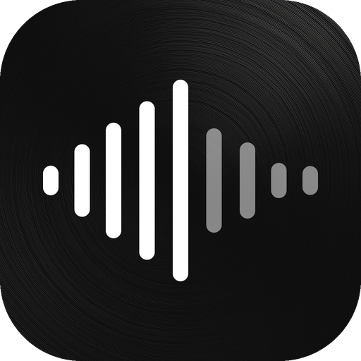
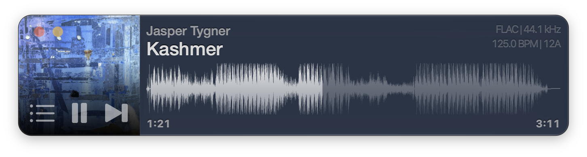
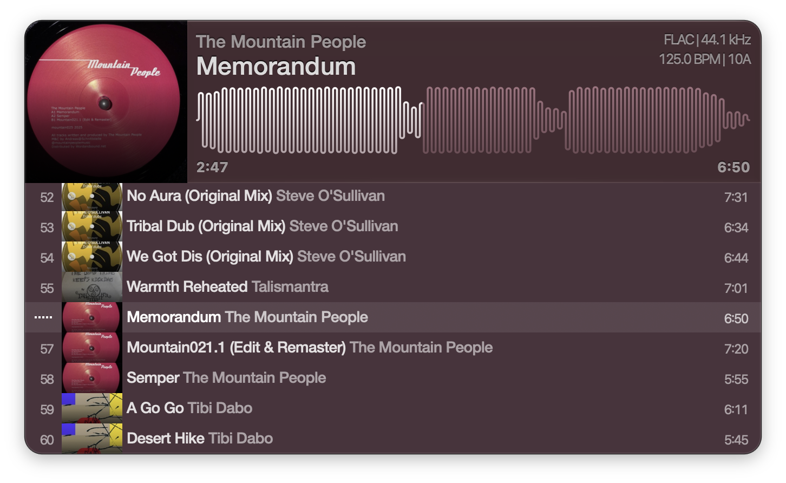

Vibe
A fast, minimal music player for Mac.
No third-party engine, no account, no subscription. Just a simple, fast player for your files.

Features
-
The whole track, drawn
Vibe draws every track as a full waveform across the window. Click anywhere on it to seek.
-
No library to import
There is no database to rebuild. Drop a file or a folder on the window and it plays. Vibe works entirely offline — it has no network access at all.
-
Decoded by macOS itself
MP3, MP2, AAC, FLAC, MP4/M4A, AIFF, and WAV. Lossless files play at full resolution, and each track’s format and sample rate sit next to the title.
-
Instant the second time
Tags, artwork, and BPM are read in the background and cached to disk, so the next open is instant.
-
Built for DJs too
A turntable-style pitch fader, bar-accurate skips, and performance FX — a low-kill filter, a reverb wash, and BPM-synced delays — all on the keyboard, without a modifier key.
-
Speaks 30 languages
Fully localized, from Bulgarian to Vietnamese, and it follows your Mac’s language automatically.
Drop a folder, start playing
Drop audio files or a whole folder on the window or the dock icon. Artwork, tags, and BPM fill in behind you while the first track is already playing. Tab shows and hides the playlist; arrow keys select and Return plays.
